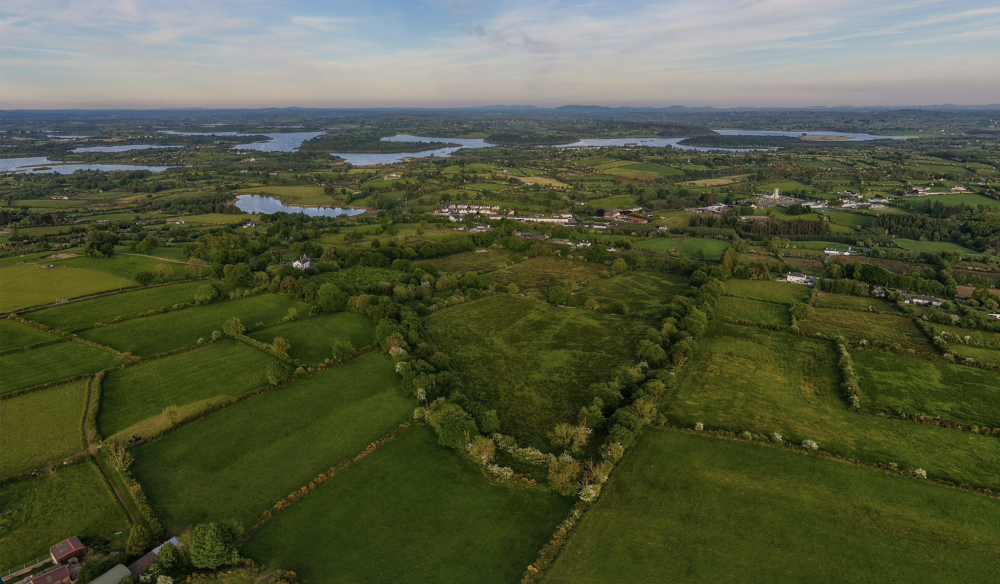
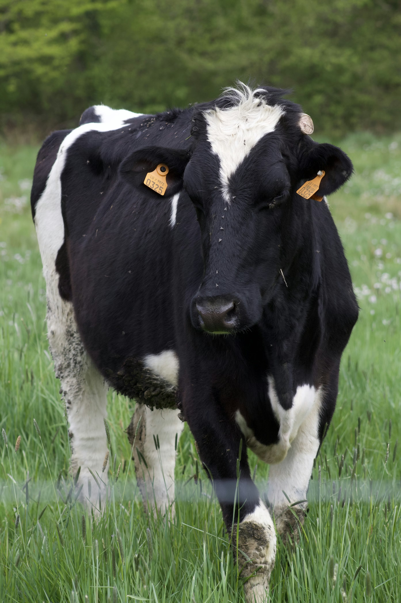
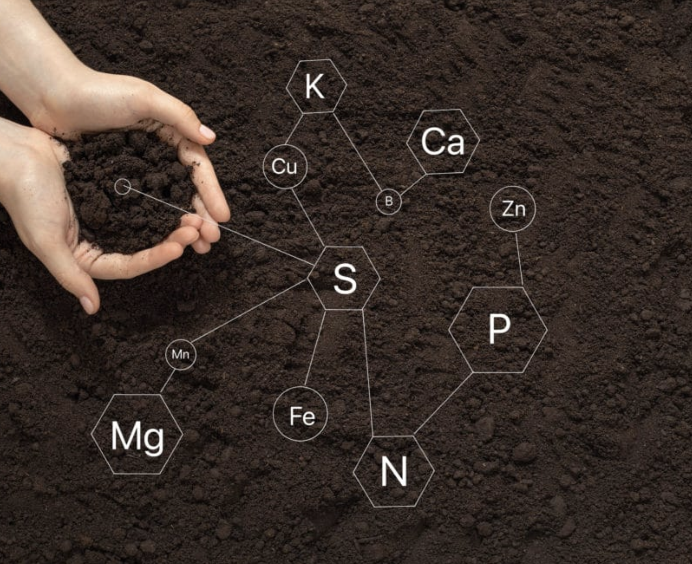
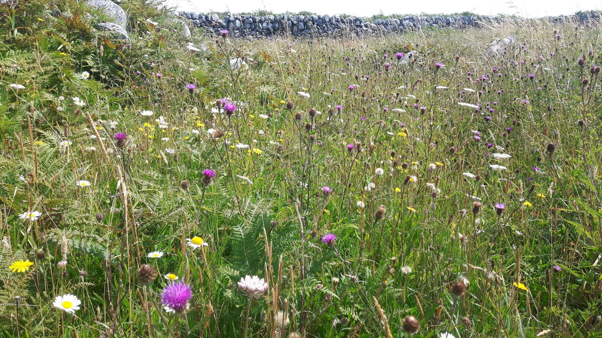
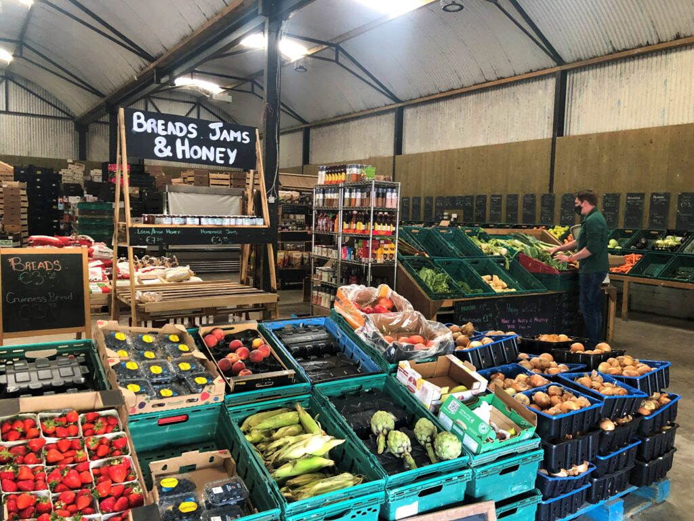
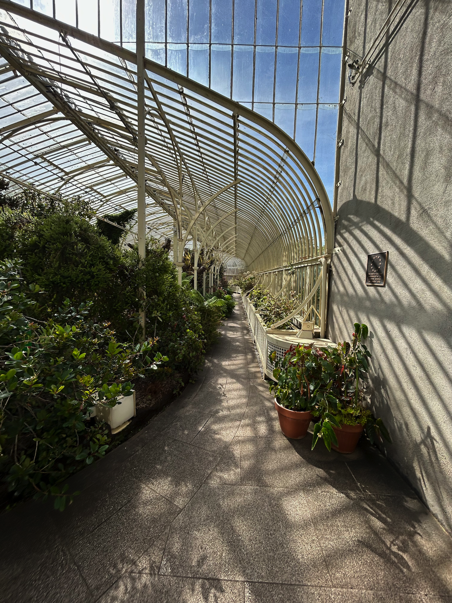
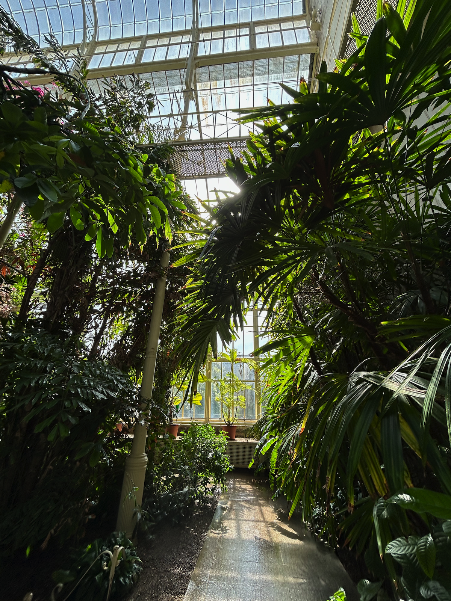
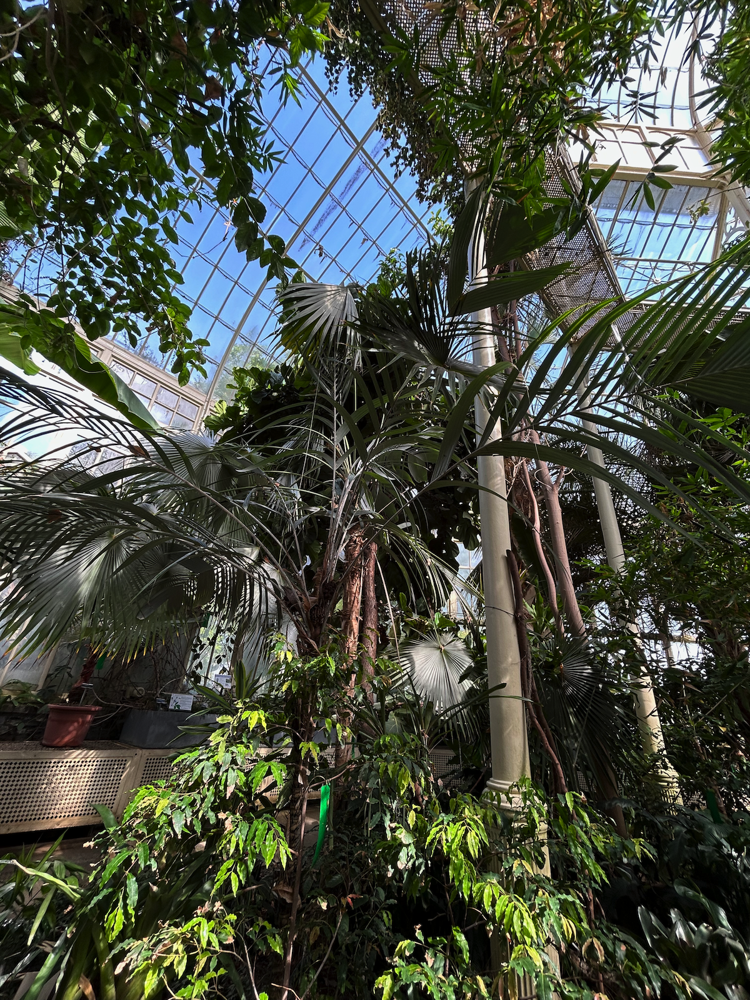

Farming provides food, jobs and livelihoods, but also shapes entire ecosystems.
Sustainable practices help maintain soil quality, protect water sources and support wildlife habitats.
By balancing production with protection, agriculture contributes directly to SDG 15: Life on Land.



This interactive map uses the National Land Cover Map 2018 to show how Ireland's land is divided into grassland, forest, peatland, water and other land-cover types. Zoom in to explore counties like Longford and see how farmland fits into the wider landscape.
Choosing locally produced, sustainable food and supporting farmers who protect the land can help make agriculture part of the solution. Becoming aware of the problems and finding enjoyable solutions, even if they are only small actions, they make a big difference.
Learn More Ways to ContributeArtificial Enviornments - Highlights the importance of maintaining specific enviornmental conditions.


